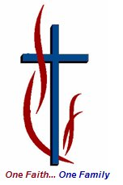

STCFSydney Telugu Christian FellowshipA home for Telugu-speaking Christians in Sydney to praise the Lord Jesus Christ together — in hope, faith and love.
Founded in July 2007 and formally incorporated as a non-profit public organisation in August 2009, the Sydney Telugu Christian Fellowship (STCF) exists to praise and worship our Lord Jesus Christ in Telugu — one of the great languages of South India.
We encourage one another to grow spiritually as we find our common purpose in Christ. We also believe it is our responsibility to support missionary and evangelical work in Andhra Pradesh, India, in every way we can.
As part of Sydney's richly multicultural society, it matters deeply to us that we pass on our language, values and culture to the next generation — so our children can understand, respect and communicate with our elders, and treasure the uniqueness of who we are, all within the bounds of the Christian faith.
To strengthen each other in labour, to rest on each other in sorrow, to nurture each other in love, to build families in Christ, grow in grace and finish the race in faith.
We meet on the second Saturday of each month from 6:00 PM. Each gathering carries its own celebration.
Carol singing at members' homes, 19 November – 21 December.
31 December 2025, from 10:30 PM to 1:00 AM — welcoming the year in worship and prayer.
3 – 5 April. A chance to step away from the city and draw closer to God's will — worship, prayer and friendship. Register by email.
STCF is managed by a working committee of nine members who plan our programs and share responsibilities. Decisions are made by the committee or at the AGM.
A few Telugu Christian fellowships and helpful links from across the globe — brothers and sisters worshipping in the same language, far and wide.
Any enquiries, requests, questions, comments or suggestions — please reach out.